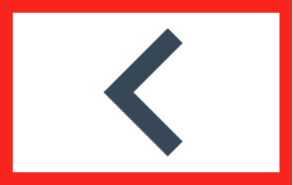

In the end, I’ll be exhausted, dopamine will give me satisfaction, and I could eat for two shamelessly.Heart rate in the running community has long been ignored. Whether to break personal records or to lose weight, heart rate is the best observable data. The heart, which is to the body what the tachometer is to the engine, accelerates its pace and increases the amount of oxygen transmitted to our muscle cells. Then, you have to know in which effort zone you find yourself. The famous Astrand formula (220 – age = MHR) is irrelevant, made up from empirical studies. Through his heart rate monitoring, the runner can control and supervise his pace (70% of MHR for example): slow paces are fundamental for any progress in the long run. If you drank too much last night or if you begun a marathon training, it is always valuable to understand how your organism reacts to imposed efforts. It is therefore possible to check at any moment your current physical condition. No more effort based on “feelings", you now have access to a personalized training plan, more rational and more effective, largely due to the ability to accurately monitor the intensity of physical activities. How many races have we finished on our knees, overtaken on all sides, cursing ourselves for the 3rd mile acceleration? Between 50 and 75% of your MHR, your body will burn a maximum of fats, whereas between 75 and 90% of your MHR, your body will consume mainly sugar. Therefore, in order to burn fat and weight, prefer longer runs (45 minutes to an hour) without exceeding 75% MHR. Above this threshold, you’ll get tired quickly and expose yourself to injuries, without any results on your weight. Thereby, it is crucial to know your heart rate, otherwise no change will be seen on your body or in your running performance. First advice: don’t be your monitor’s slave! Before everything else, running is for pleasure and fun! Please note that the heart rate is unique to each person. Do not compare yours to those of others!
Je serai épuisé à la fin de mon effort, la dopamine me rendra satisfait, et je pourrai manger comme quatre sans vergogne.Voilà une des méconnaissances classiques des runners aujourd’hui. Que ce soit pour progresser ou perdre du poids, le cardiofréquencemètre est la meilleure donnée observable concernant l’effort physique.Le cœur, qui est au corps ce que le compte-tour est au moteur, accélère sa cadence et augmente la quantité d’oxygène transmise à nos cellules musculaires. Il s’agit alors de savoir dans quelle zone d’effort nous nous trouvons. La célèbre formule d’Astrand (220 pulsations moins l’âge=FCM) est une boutade issue d’études empiriques qui met plus en danger les coureurs qu’autre chose.Le cardio permet au coureur de contrôler et de surveiller son allure (70 de la FCM par exemple), car il faut savoir que les allures lentes sont fondamentales à toute forme de progrès dans le temps.Que vous ayez bu le verre de trop hier soir, ou que vous vous préparez à votre premier marathon, il est toujours intéressant de comprendre comment votre organisme réagit aux efforts imposés. Il vous est possible de vérifier à chaque instant votre forme du moment. Fini l’effort basé sur les « sensations », vous avez désormais accès à une planification d’entraînement plus personnalisée, plus rationnelle et plus efficace et ce, en grande partie grâce à la possibilité de surveiller précisément l’intensité de l’activité physique. Combien de courses avons-nous fini dans le rouge, dépassés de tout côté, a se maudire intérieurement d’avoir accélérer au 3ème kilomètre ? Entre 50 et 75 de votre FCM, votre corps va brûler un maximum de graisses, alors qu'entre 75 et 90 de votre FCM, votre corps consommera surtout des sucres. Ainsi, pour perdre de la graisse et donc du poids, privilégiez de longs efforts (sorties de 45min-1h) sans dépasser les 75 FCM. Au-dessus de ce seuil, vous vous fatiguerez vite et vous exposez à un risque de blessure, sans aucun retour sur la balance. Ainsi, il est crucial de savoir comment utiliser son cardio, sans quoi les résultats corporels ou sportifs ne suivront pas.Premier conseil : ne soyez pas esclave de votre cardiofréquencemètre. La course à pied est avant tout une recherche de PLAISIR !Attention, la fréquence cardiaque est propre à chaque personne. Ne la comparer pas à celles des autres !Pour une analyse scientifique approfondie :http://entrainement-sportif.fr/cardiofrequence.pdf

During a physical effort, the human organism draws its energy from two sources: • Carbohydrates; glucose, or sugar, present mainly in the blood and muscle glycogen • Lipids; triglycerides present primarily in adipose tissueWhen we talk about calories, we do not distinguish calories from lipids and those from carbohydrates. Yet, the type of effort that is made will drastically change the way our body draws energy. According to heart rate, and thus according to the effort requiring of him, the body will draw the energy needed to operate either in carbohydrates or lipids. Carbohydrates are easier to mobilize during violent effort; our body will therefore mobilize them. During moderate effort, the body tends to pick up in the lipids.
Où est elle puisée dans notre corps ? Lors d’un effort, l’organisme puise son énergie de deux sources : 1) les glucides ; le glucose, donc le sucre, présent dans le sang et dans le glycogène musculaire principalement, et 2) les lipides ; triglycérides présent dans les tissus adipeux principalement. Lorsqu’on parle de calorie, on ne distingue donc pas entre les calories provenant des lipides et celles provenant des glucides. Or le type d’effort que l’on fait va drastiquement changer la façon dont notre organisme va puiser l’énergie. Selon la fréquence cardiaque, et donc selon l’effort qui lui est demandé, l’organisme ira puiser l’énergie nécessaire à son fonctionnement dans les glucides ou dans les lipides. Les glucides étant plus faciles à mobiliser, lors d’effort violents, c’est eux que l’organisme ira mobiliser. Lors d’efforts modéré, l’organisme aura tendance à aller chercher dans les lipides. Des scientifiques ont observé que la courbe de consommation de lipides chute pour des efforts violents : l’organisme ne puise donc pas dans les graisses, mais ira puiser son énergie directement dans le glucide présent dans le sang et dans le glycogène musculaire jusqu’à épuisement (hypoglycémie). Un exemple simple que je rencontre souvent illustre parfaitement cette situation. J’ai plusieurs fois eu cette discussion à la salle où je pratique la boxe anglaise : perd on du poids lorsqu’on fait une séance ? La boxe est en effet un des sports qui permet de brûler le plus grand nombre de calories par heure. Néanmoins, ce n’est pas le bon sport pour perdre de la graisse. Lors des séances, l’organisme va littéralement vider tout le glucide présent dans le sang. Si la personne a mangé avant, elle a suffisamment de ressource pour tenir la séance. Sinon c’est l’hypoglycémie ou l’épuisement. Dans les deux cas, le taux de sucre dans le sang (la glycémie) est très faible et provoque la sensation de faim. On va donc manger pour combler ce manque. Résultat de la séance de boxe : on a vidé le sucre de notre sang, puis on l’a à nouveau rempli, sans jamais avoir puisé dans les graisses. La bonne façon de puiser dans les lipides est de faire un effort modéré (aux alentours de 50 à 65% de sa fréquence cardiaque maximum) pendant une durée supérieure à trente minutes.